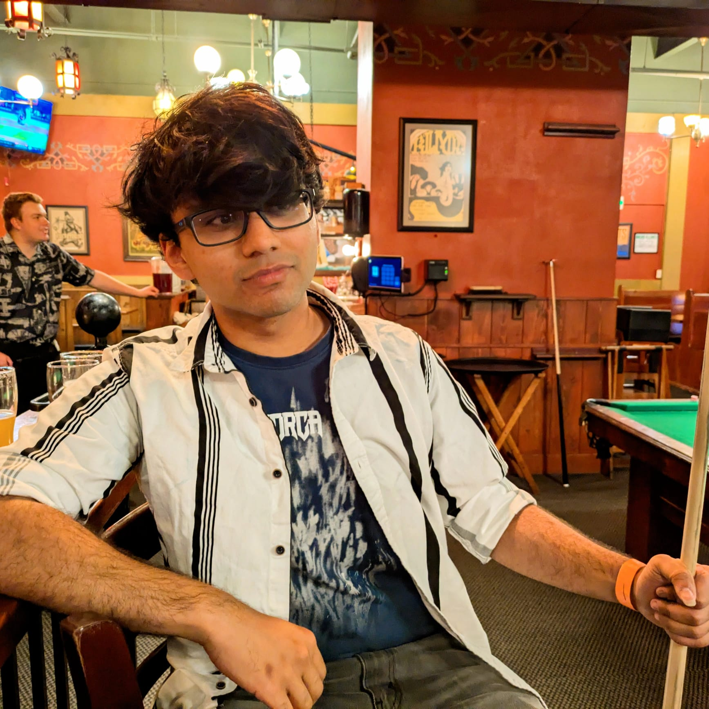

me
i am strongly concerned with technology and its impact on society, particularly our cultural institutions. i have spent a lot of time thinking deeply about the many ways in which the world is bad. i would prefer to have had spent this time surfing.
i have interests in many artistic pursuits, particularly literature and cinema. i write about cinema here.
i play the guitar and the piano and support manchester united and the detroit lions. you will often find me saying things like "madeira, manchester, madrid, turin, and manchester again" or "mamba mentality" or "if i speak i am in big trouble". despite this i am a big shill for notorious liverpool supporters lebron james and lana del rey, and for the notorious manchester city (ew) supporters noel and liam gallagher. one of the saddest moments in life is when you discover that your favorite musicians support the wrong football teams.
i write short stories and don't publish them. i speak two languages and am being forced to pick up a third. i am bad at chess but will never accept it. i should probably start doing stand-up.